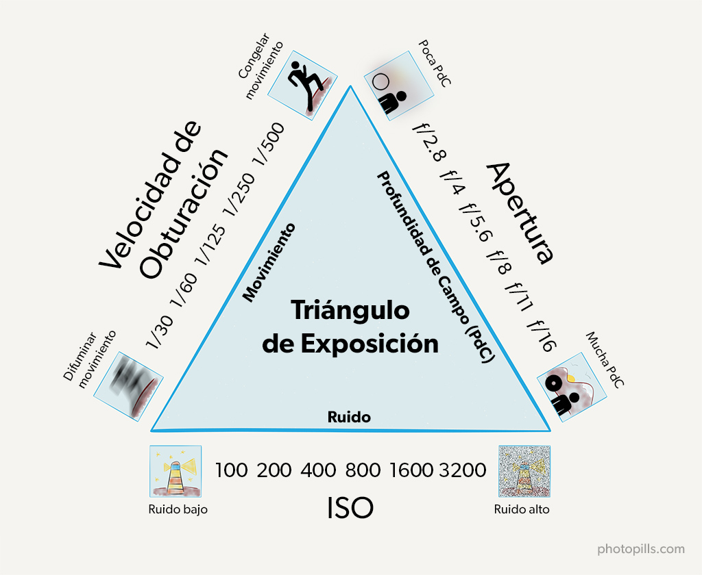

Reglas de composición
Septiembre 2021
¿Cúal es la diferencia entre una buena y una mala fotografía? Asumiendo que la exposición y el enfoque son correctos, existen una serie de elementos sobre los que se continuamente al evaluar una foto, estos son las reglas de composición. Dicho de manera sencilla, la composición es la forma de encuadrar la imagen que va a tomar. En este artículo vamos a ver algunas reglas de composición fotográfica y por qué es importante aplicarlas.
- Regla de los tercios
- Lineas principales
- Patrones y texturas
- Punto de vista
¿Porqué Es Importante Saber Componer?
Componer es Crear, es un arte y por lo tanto no existen limitaciones. No hay una composición mejor que otra. Sin embargo existen una serie de reglas o guías sobre cómo organizar los elementos en la fotografía, que provienen de la naturaleza y tienen que ver con cómo los seres humanos percibimos las imágenes. Es importante conocerlas para entrenar tu ojo e incorporarlas, esto te permite utilizar las reglas de composición de forma natural, automática, para luego poder crear también rompiéndolas. Saber componer te da la capacidad para comunicar, transmitir, expresar, mostrar un mensaje a través de una fotografía.
Exposición
Agosto 2021
La exposición es la acción de someter un elemento fotosensible a la acción de la luz (elemento fundamental de la fotografía). La correcta exposición de una fotografía será el primer paso para lograr una buena foto, al margen de una mejor o peor composición y de una mayor o menor belleza de lo retratado. Por consiguiente, una mala exposición será el primer gran error que deberemos evitar cuando fotografiemos.
Triángulo de exposición.
Este triángulo se compone en tres partes: la apertura de diafragma, la velocidad de obturación y el valor ISO. Cada uno de estos de manera independiente afectan la exposición de la imagen y a su vez cada control modifica otro atributo de la imagen, sin embargo, conservan una relación entre ellos, es decir, si modificamos uno de estos valores podemos compensar esa modificación que hicimos en la exposición de la imagen, cambiando el valor de otro de los pilares, tu trabajo como fotógrafo es encontrar el equilibrio.
Primer lado del triángulo de exposición: Apertura del diafragma
La apertura o "número f" representa que tan abierta está su lente. Imagínense un agujero: si está abierto un poquito, no pasará mucha luz. Si es un agujero grande, pasará mucha luz.
- Números PEQUEÑOS (como f / 1.8) = apertura apertura grande.
- Números GRANDES (como f / 22) = apertura pequeña.
Otra cosa que puede verse afectada por la apertura es la profundidad de campo, o qué parte de la imagen tiene un enfoque nítido.
- Una apertura amplia (número pequeño) hará que el enfoque sea menor
- Una apertura cerrada (número grande) hará que el enfoque sea mayor
Segundo lado del triángulo de exposición: Velocidad de obturación
La velocidad del obturación representa la rapidez con la que se abre y se cierra el obturador. Si el obturador permanece abierto durante más tiempo, entra más luz en la cámara. Si se abre y se cierra muy rápido, se deja entrar menos luz. Se mide en segundos, décimas de segundo (1/10"), centésimas de segundo (1/100") y milésimas de segundos (1/1000").
Efectos Secundarios.
La velocidad además de modificar el tiempo que pasa la luz al sensor (lo que modifica la exposición) también modifica el movimiento de los elementos que aparecen en la fotografía (con una velocidad alta 1/1000 congelamos el movimiento de un elemento, mientras que con una velocidad baja 10 segundos, registramos todo el movimiento que realice el elemento)
Tercer lado del triángulo de exposición: ISO
El valor ISO. El ISO es un estándar de sensibilidad la luz del sensor de tu cámara. A menor valor de ISO, menos sensible es el sensor a la luz, al contrario de un valor de ISO más alto que aumenta la sensibilidad del sensor. La principal desventaja de elevar el ISO demasiado es la aparición de ruido en tus fotografías reduciendo por tanto la calidad general de las imágenes. Este efecto debe tenerse en cuenta a la hora de equilibrar el triángulo de exposición.
Objetivo final: El equilibrio en el triángulo de exposición
La regla básica del triángulo de exposición es lograr un equilibrio. Cuando los tres lados del triángulo están bajo control, tienes un valor de exposición correcto (EV), que normalmente se acerca a cero. De acuerdo con esta regla, siempre que ajustes uno de los lados del triángulo, tendrás que compensar ajustando uno o los dos otros lados manteniendo siempre un equilibrio, ya que ese es el objetivo final del triángulo de exposición.